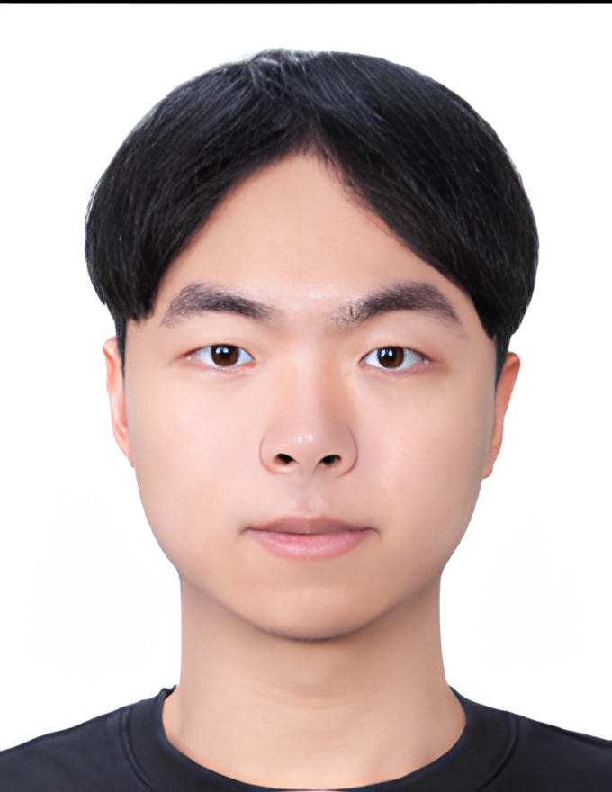
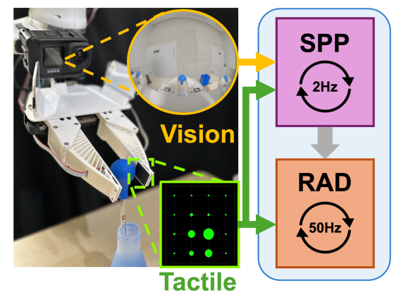
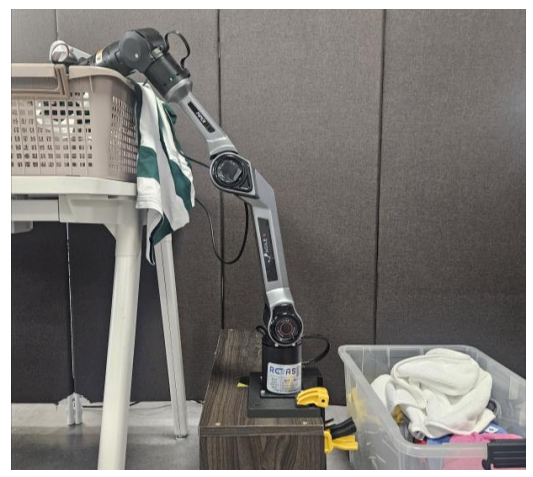
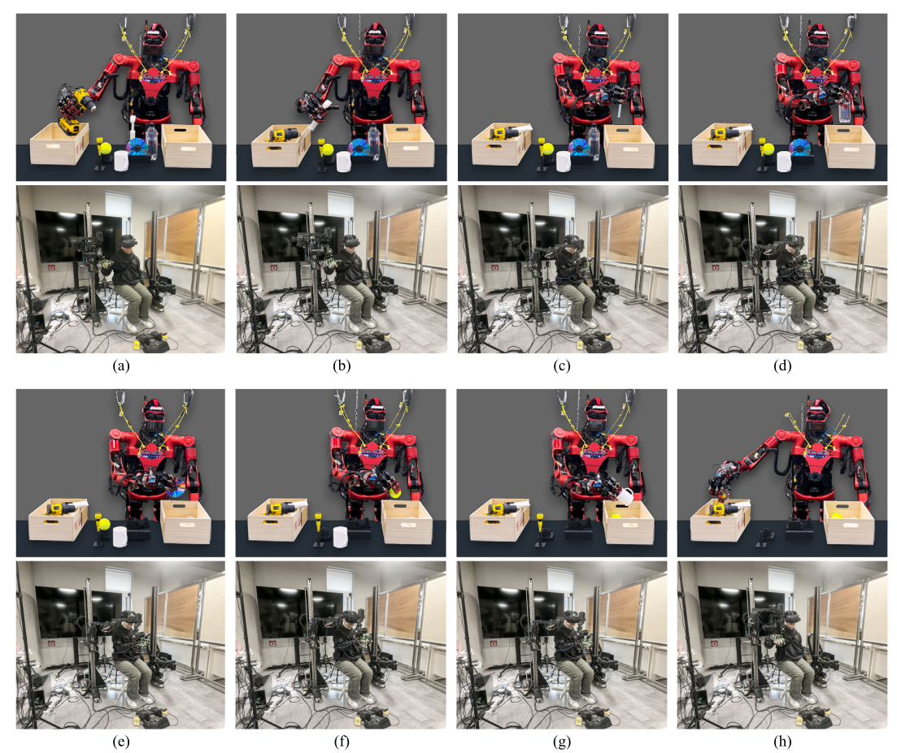

Chaiyong Mun
I am an Integrated M.S./Ph.D. student in the Department of Intelligence and Information at Seoul National University, working in robotics under the supervision of Prof. Jaeheung Park at DYROS, Dynamic Robotic Systems Lab.
My research focuses on multimodal robot manipulation through visual-tactile perception and robot learning. I am interested in tactile sensing, imitation learning, autonomous manipulation, and Vision-Language-Action models for humanoid robots that can understand and interact with complex real-world environments.
Previously, I received my B.S. in Electrical and Computer Engineering from Seoul National University. I have worked on humanoid manipulation, haptic teleoperation, transparent-object grasp pose estimation, and autonomous laundry handling for domestic service robots.

Research
I develop learning-based manipulation systems that combine visual perception, tactile sensing, and control. My current work explores how robots can estimate grasp states, detect tactile failures, recover from manipulation errors, and generate robust end-effector pose and force commands for contact-rich tasks.
Publications
|
 |
Hierarchical Reactive Grasping for Contact-rich Manipulation via Topological Visuo-Tactile Learning
IEEE/RSJ International Conference on Intelligent Robots and Systems (IROS), 2026
This work presents a hierarchical visuo-tactile learning framework for contact-rich manipulation. It combines a low-frequency semantic planning policy with a high-frequency reactive action decoder to modulate grasp force using tactile contact changes such as incipient slip. The method is validated on fluid transfer, rubber band stretching, and whiteboard erasure tasks. |
|
 |
Grasp State Estimation via 3D Mean Resultant Length
Proceedings of the Korea Robotics Society Annual Conference (KRoC), 2026
This work estimates grasp states using cumulative tactile signal changes and a 3D extension of Mean Resultant Length. Instead of explicitly estimating contact force or friction, the method analyzes directional concentration in tactile distributions to classify no-contact, grasp, and slip states. |
|
 |
SNU-Avatar Haptic Arm: A Hybrid QDD/DD Operator Interface for Teleoperation
IEEE Access, 2026
This paper introduces the SNU-Avatar Haptic Arm, a 6-DoF haptic operator interface for immersive humanoid robot teleoperation. The system combines quasi-direct-drive and direct-drive actuation to balance human-scale workspace, backdrivability, and force output, and is validated in teleoperation scenarios. |
Research Outputs
One-Class Tactile Failure Detection and Recovery for Autonomous Laundry Handling.
Method and apparatus for robot grasp state estimation using dual-channel tactile anomaly detection with Mean Resultant Length-based features.
Projects
AI-based Robot Control Algorithm Development — Samsung DA, Project Lead. Developed an autonomous laundry handling system by integrating visual perception, tactile sensing, and closed-loop failure recovery.
Learning-based Humanoid Robot Manipulation — MOTIE, Research Assistant. Developed a visual-tactile imitation learning framework for robust object manipulation.
Haptic Teleoperation for Humanoid Robot Manipulation — DYROS, Project Lead. Built a MuJoCo simulation environment and implemented haptic teleoperation for grasping and manipulation.
Transparent Object Grasp Pose Estimation — Samsung SAIT, Research Assistant. Developed a vision-based grasp pose estimation framework using RGB-D depth restoration and NeRF-based perception.
Education
Integrated M.S./Ph.D. program, Department of Intelligence and Information, 2023 Fall-current.
B.S. in Electrical and Computer Engineering, 2017-2023 Fall.
Skills
Software: C++, Python, MATLAB, PyTorch, Anaconda, Docker, C
System Integration: RTLinux, ROS1, ROS2, EtherCAT
Applications: Isaac Gym/Lab, MuJoCo, CoppeliaSim, MoveIt, Git, VS Code, Notion